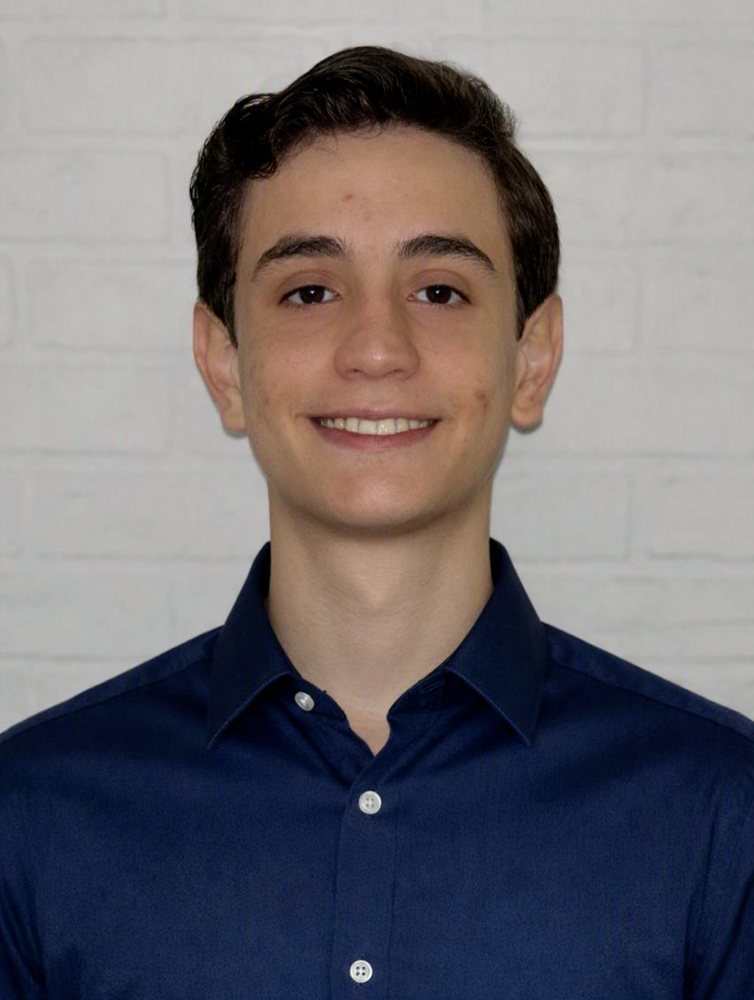

Uma breve introdução
Bom dia, boa tarde e boa noite! Meu nome é Eduardo Souto de Almeida, tenho 17 anos, estudo no Colégio Caminhos e Colinas em São Paulo, SP, na segunda série do médio. Sou um entusiasta da computação, IA, games e por mais desconexo que pareça, astronomia e artes. Sou simplesmente apaixonado por essas áreas.
Atualmente estou fazendo o Sprint Behring Academy, tem sido um experiência realmente incrível! Fiz novos amigos, aprendi coisas que fora desse ambiente não teria aprendido, descobri novas oportunidades e tenho me desenvolvido muito! Tem sido uma experiência realmente incrível! Nesta simples página, farei uma breve apresentação sobre mim. Falarei sobre minhas paixões, meus sonhos, minhas conquistas, onde estudo, moro e meus hobbies! 😁👍
Minhas Paixões
Eu sou uma pessoa muito multidisciplinar, até porque não acredito que haja uma divisão consistente entre as múltiplas áreas do conhecimento, desde filosofia até tecnologia e física. Portanto, gosto de muitas áreas, e amo aprender tudo que é novo. Gosto de Linguística, teologia, filosofia, astronomia, física, matemática, literatura, desenvolvimento de jogos, música, IA, artes, animação, desenho e muito mais.
Mas minhas maiores paixões rodam entre essas quatro áreas:
- Astronomia
- Computação/Tecnologia
- Artes
- Games
Essas são as quatro áreas que amo de paixão. A história de como comecei a gostar dessas áreas é complexa, mas vou tentar resumir.
Comecei a gostar de astronomia por causa da OBA. Participei pela primeira vez dela no meu nono ano, ode conquistei um 9/10 e uma medalha de prata. Não demorou muito para eu descobrir que eu tinha sido classificado para as seletivas paras as olimpíadas internacionais de astronomia. Foi por causa disso, e desse sonho que eu comecei a estudar pra valer, e foi nessa época que eu entendi o quão bom é estudar e aprender coisas novas. Comecei a participar do máximo de olimpíadas possível, mas meu foco e paixão sempre esteve na astronomia. Tenho participado de olimpíadas de astronomia até hoje.
A área de tecnologia foi um pouco diferente. Tudo começou quando ainda criança tive o sonho de criar jogos de videogame, desde então tive um milhãos de ideias, e logo descobri que para criar um jogo eu precisaria saber programar, foi a partir daí que eu descobri programação. Comecei aprendendo C#, estudava pelo youtube, mas nunca aprendi muita coisa. A coisa mudou mesmo quando eu comecei o CS50x de Harvard, foi minha primeira experiência real com programação. Lá eu aprendi os fundamentos das Ciências da Computação, aprendi C , Python, SQL, HTML, CSS e um pouquinho de JS. Esse curso me abriu portas para explorar ainda mais fundo o mundo da tecnologia, me levou à Sprint Behring Academy e me levou à ONIA, a primeira olimpíada de IA do Brasil que seleciona para IOAI, tenho me dedicado a essa olimpíada atualmente e tenho aprendido Machine Learning, NumPy , Scikit-Learn , Pandas e MatPlotLib .
Mas agora você deve estar se perguntando: "E as artes??". Bom, meu talento sempre esteve nas artes, desde criança eu passo horas desenhando, tenho um portifólio enorme, muitos desenhos mesmo. Poucos deles são bem trabalhados, a maioria são só rabiscos e ideias. Quando tive a ideia de montar um estúdio de games, eu comecei a desenhar cadernos e cadernos de personagens e cenários. Mas não me limitei a desenhos e rabiscos, já fiz pinturas, esculturas, escrevi poemas e histórias, já até criei músicas. A arte pra mim nunca foi um ramo separado das outras coisas, ela sempre andou junto, desde meus resumos e esquemas em astronomia, física e matemática, até meus projetos em tecnologia.
Meus Sonhos e Objetivos
Todo mundo tem um sonho, senão vários. Nesta seção vou falar sobre meus principais sonhos e objetivos!
Meus sonhos estão muito voltados a minha vida acadêmica, uma vez que estou terminando o ensino médio e me preparando para as universidades. Os meus principais sonhos e objetivos são:
- Representar o Brasil na IOAA/OLAA
- Representar o Brasil na IOAI
- Estudar fora do Brasil, nos Estados Unidos
- Criar um jogo de video game
Como já disse anteriormente, estudo muito astronomia, principalmente em nível olímpico e meu maior objetivo desse ano é com certeza passar na etapa online das seletivas e ser selecionado para a famosa etapa de barra, que acontece em Barra do Piraí. É meu sonho chegar até a etapa dos treinamentos e ter aulas com os grandes mestres da astronomia no Brasil, como o professor Virgílio do canal ABFastrobiofísica, o Canalle e o grandissíssimo Roberto Boczko, só a título de exemplos. E se Deus quiser, representar o Brasil na IOAA 2027 que ocorrerá na Turquia, ou na OLAA 2027.
Já aproveitando o gancho de representar o Brasil em olimpíadas internacionais, a ONIA é uma iniciativa olímpica muito recente com objetivo de promover o letramento digital e introduzir o tema das IAs no contexto educacional brasileiro. Hoje a ONIA está em sua 3ª Edição. Participei pela primeira vez dela, ano passado, e cheguei até a 2ª Etapa da 3ª fase, meu objetivo esse ano é ir além, e talvez alcançar o pódio e ficar entre os alunos que representaram o Brasil na IOAI, a primeira olimpíada internacional de IA.
Esses objetivos sem dúvida me ajudaram muito a realizar meu terceiro objetivo, que é estudar fora. Quero estudar Ciências da Computação com Engenharia e Game Design nos Estados Unidos. Para isso tenho muitos targets menores a cumprir e a conquistar, assim como as olimpíadas acima, é nom que eu tenha projetos, mantenha meu currrículo forte e procure por mentorias como a BRASA e o Prep Program da Fundação Estudar. Atualmente, estou nos processos seletivos de ambas as mentorias.
Por fim, um objetivo maior, longínquo e mais complexo: criar um game. Criar um game envolve muita coisa, escrita criativa, programação, burocracia, música, artes, entre muitas outras coisas. Atualmente tenho entorno de 7 a 10 ideias de jogos, conceitos de jogos quase completos, com suas mecânicas personagens e história próprias. Dentre elas, apenas 3 tem uma boa quantidade de conteúdo e apenas uma -- o meu projeto atual --, tem recheio suficiente para ser apresentada. Para um dia eu realizar esse sonho, tenho que dominar C# (pelo fato de eu querer criar o jogo na Unity), animação e composição musical.
Breve Conclusão
Ficou bem longo. Agradeço por lerem até aqui, é uma honra pra mim ter aprendido tanto durante esses ans e por ter aprendido muito mesmo na Sprint Behring Academy. Como prometi no ínicio, vou falar bem brevemente de algumas conquistas minhas:
- Tenho duas medalhas de ouro e uma de prata na OBA e fui selecionado para as seletivas internacionais todas as vezes que participei
- Passei, este ano mesmo, na LALA
- Ganhei medalha de ouro nacional na OL (Olimpíada de Literatura), em quarto lugar geral na minha categoria e livro (O Retrato de Dorian Gray)
- Li 25 livros (em sua maioria, clássicos) em 2025, este ano li 14 até o momento
- Sou top 2 na minha classe
- FIZ A SPRINT BEHRING ACADEMY!!!!!!!!
Enfim, muito obrigado pelo privilégio. Bom dia, boa tarde e boa noite meus caros leitores. Deixarei os links do meu GitHub e do meu linkedin no footer dessa page.